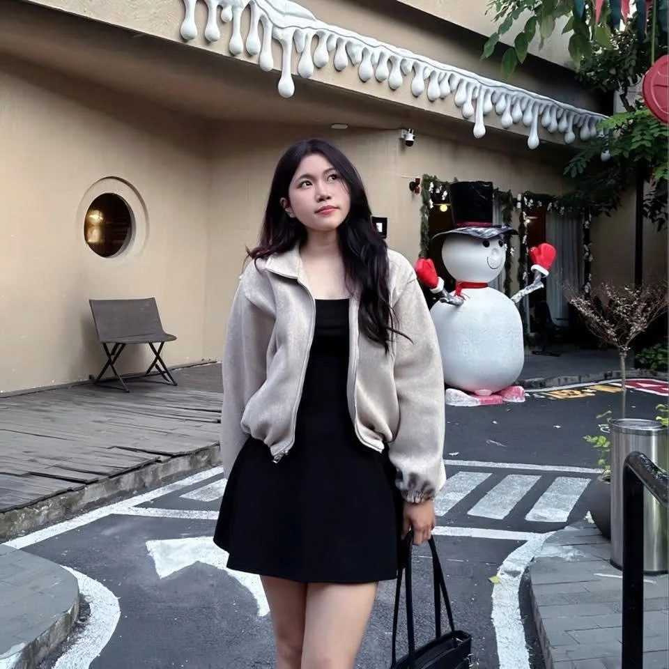
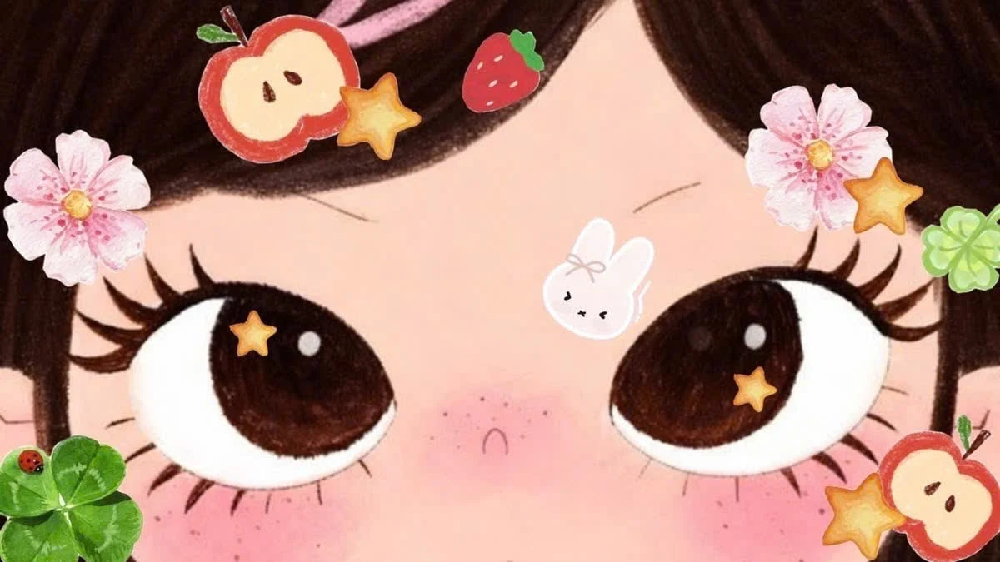

GRAPHIC DESIGN PORTFOLIOÝ TƯỞNG → HÌNH ẢNH
XIN CHÀO, MÌNH LÀ
NHƯQUỲNH.
Một góc nhìn.
Nhiều cách kể.
Phạm Vũ Như Quỳnh
Sinh viên Đại học Duy Tân

THIẾT KẾ BẰNG SỰ TÒ MÒ.CUỘN ĐỂ KHÁM PHÁ ↓
MỖI TÁC PHẨM, MỘT CÂU CHUYỆN
Visual
archive.
Những ý tưởng không đứng yên.
Cùng mở ra thế giới thiết kế của mình.
01 / SELECTED WORKS
TÁC PHẨM
CHỌN LỌC.
Từ những ý tưởng đầu tiên
đến những hình ảnh thành hình.
BEHIND THE PIXELS.
02 / A LITTLE ABOUT ME
MỘT CHÚT
VỀ QUỲNH.
Khám phá ý tưởng qua hình ảnh, màu sắc và bố cục.
Mình là Phạm Vũ Như Quỳnh, sinh viên Đại học Duy Tân. Đây là không gian lưu giữ và chia sẻ những tác phẩm thiết kế của mình.
- HỌ VÀ TÊN
- Phạm Vũ Như Quỳnh
- NGÀY SINH
- 24/03/2006
- HỌC VẤN
- Sinh viên Đại học Duy Tân
Đến một dấu ấn riêng
